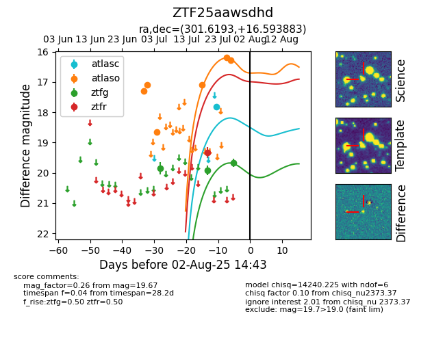

Target ZTF25aawsdhd at 2025-08-02 14:43, see:
FINK: fink-portal.org/ZTF25aawsdhd
Lasair: lasair-ztf.lsst.ac.uk/objects/ZTF25aawsdhd
ALeRCE: alerce.online/object/ZTF25aawsdhd
alt names
ZTF25aawsdhd (ztf,fink)
coordinates:
equatorial (ra, dec) = (301.6193,+16.59388)
galactic (l, b) = (56.4393,-8.28394)
photometry
last atlasc=17.82, atlaso=16.27, ztfg=19.67, ztfr=19.33
1 atlasc, 6 atlaso, 3 ztfg, 1 ztfr detections
